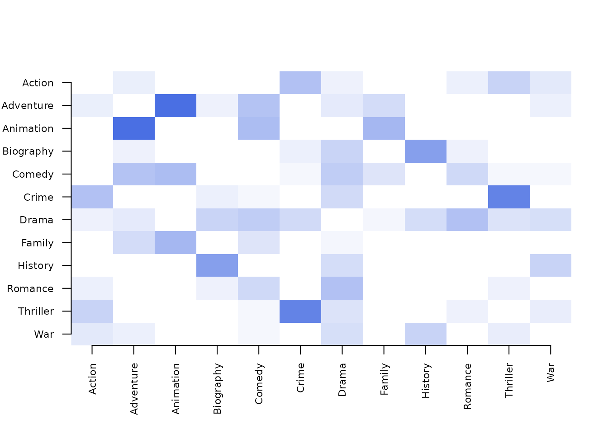

Comparing groups
Written by Mohammed Saqr and Sonsoles López-Pernas
Source:vignettes/articles/comparing-groups.Rmd
comparing-groups.RmdCo-occurrence data usually come from a population that is not homogeneous: articles from several journals, films from several decades, sessions from several courses. Pooling all transactions into one network answers how items go together overall, but it hides whether the pattern holds in every group, and it lets the largest group set the weights. Two other questions are often the substantive ones. The first is comparative: does the structure of the network differ between groups, and does an item hold the same position in each? The second is integrative: what single network describes the groups when each group is first analyzed on its own terms, so that differences in group size or composition do not distort the combined weights?
cooccurrence() answers the first question with
split_by, which builds one network per group and stacks the
edge lists with a group column, and the second with
aggregate_by, which builds one network per group and then
combines the edge weights into one network. This guide applies both to
film genres across decades, shows how to read per-group network and node
metrics, and how to extract, convert or plot a single group’s
network.
Data
movies holds 1,000 films with an IMDb rating of at least
7.0, released between 1970 and 2024. In the analyses below:
- Transaction: a film (one row).
-
Items: its genres, in the comma-delimited
genrescolumn. -
Grouping variable:
decade, the release decade (1970s to 2020s). -
Second grouping variable: a rating band derived
from
averageRating.
The decades are of unequal size, which matters for any comparison of network density.
with(movies, table(decade))
#> decade
#> 1970s 1980s 1990s 2000s 2010s 2020s
#> 83 105 119 207 327 159The 2010s contribute 327 films and the 1970s 83, so the later networks rest on about four times as many transactions.
Does the genre network change across decades?
split_by = "decade" builds a separate Jaccard network
for each decade. Genres on fewer than five films within a decade are
dropped with min_occur = 5, which is applied within each
group.
by_decade <- cooccurrence(movies, field = "genres", sep = ",",
split_by = "decade", similarity = "jaccard",
min_occur = 5)
print(by_decade, n = 5)
#> # cooccurrence: 18 nodes, 306 edges
#> # split_by: decade (6 groups)
#> # similarity: jaccard | counting: full
#> # isolates: 0 | per-group metrics: summary()
#> from to weight count group
#> Adventure Animation 0.500 7 1970s
#> Crime Thriller 0.429 6 1970s
#> Biography History 0.333 4 1970s
#> Animation Family 0.250 3 1970s
#> Animation Comedy 0.226 7 1970s
#> # ... 301 more edgesThe result stacks six networks with 306 edges in total over 18
genres. The header omits a pooled density and mean degree, which are
undefined when the same pair can appear once per group. The per-group
metrics come from as.data.frame() with
what = "groups".
as.data.frame(by_decade, what = "groups")
#> group n_nodes n_edges possible_edges density weight_mean count_sum
#> 1 1970s 12 34 66 0.515 0.1334 136
#> 2 1980s 14 43 91 0.473 0.0977 164
#> 3 1990s 13 39 78 0.500 0.1126 187
#> 4 2000s 16 66 120 0.550 0.0769 335
#> 5 2010s 17 85 136 0.625 0.0666 581
#> 6 2020s 13 39 78 0.500 0.1004 184The 2010s network is the largest, with 17 genres and 85 edges, and the densest (0.625); the 1980s network is the sparsest (0.473). The mean Jaccard weight falls from 0.133 in the 1970s to 0.0666 in the 2010s. Both trends follow the number of films: with more films, more genre pairs co-occur at least once, and the added pairs are weak ones. Differences in density between groups of unequal size are therefore partly a sample-size effect and should not be read as a change in how genres combine without a comparison at equal sample size.
Does a genre hold the same position in every decade?
The node table of a split result has one row per genre per decade,
with the group column first. subset() selects
one genre from it.
decade_nodes <- as.data.frame(by_decade, what = "nodes")
subset(decade_nodes, node == "Drama")
#> group node degree strength count_strength frequency
#> 1 1970s Drama 10 1.141 73 60
#> 13 1980s Drama 11 1.256 94 68
#> 27 1990s Drama 11 1.058 99 84
#> 40 2000s Drama 15 1.148 168 136
#> 56 2010s Drama 16 1.157 254 200
#> 73 2020s Drama 11 0.949 90 86Drama is linked to 10 of the other 11 genres in the 1970s and to 16 of the other 16 in the 2010s, so it is connected to almost every genre in every decade. Its strength, the sum of its Jaccard weights, stays between 0.949 (2020s) and 1.256 (1980s): the number of its ties grows with the number of genres, but its total association changes little.
Which genre pairs lead within each decade?
With split_by, top_n is applied within each
group, so top_n = 3 keeps the three strongest pairs of
every decade.
decade_top <- cooccurrence(movies, field = "genres", sep = ",",
split_by = "decade", similarity = "jaccard",
min_occur = 5, top_n = 3)
print(decade_top, n = 18)
#> # cooccurrence: 12 nodes, 18 edges
#> # split_by: decade (6 groups)
#> # similarity: jaccard | counting: full
#> # isolates: 0 | per-group metrics: summary()
#> from to weight count group
#> Adventure Animation 0.500 7 1970s
#> Crime Thriller 0.429 6 1970s
#> Biography History 0.333 4 1970s
#> Documentary Music 0.444 4 1980s
#> Action Crime 0.233 7 1980s
#> Biography History 0.214 3 1980s
#> Adventure Animation 0.333 5 1990s
#> History War 0.333 3 1990s
#> Comedy Drama 0.298 31 1990s
#> Action Adventure 0.261 12 2000s
#> Action Crime 0.231 12 2000s
#> Comedy Drama 0.231 36 2000s
#> Action Crime 0.299 26 2010s
#> Adventure Animation 0.288 15 2010s
#> Biography Documentary 0.287 27 2010s
#> Action Adventure 0.364 8 2020s
#> Adventure Animation 0.250 4 2020s
#> Documentary Music 0.243 9 2020sAdventure–Animation is among the three strongest pairs in four of the six decades, with a Jaccard weight between 0.250 (2020s) and 0.500 (1970s). Action–Crime is among them in the 1980s, 2000s and 2010s, and Comedy–Drama in the 1990s and 2000s. Documentary–Music leads in the 1980s (0.444) and returns in the 2020s.
Do the highest-rated films combine genres differently?
A grouping variable can be derived before the call.
transform() adds a rating band, split_by
builds one network per band, and table() gives the number
of films in each band.
rated <- transform(movies,
rating_band = ifelse(averageRating >= 8, "8+", "7-7.9"))
cooccurrence(rated, field = "genres", sep = ",", split_by = "rating_band",
similarity = "jaccard", min_occur = 10, top_n = 3)
#> # cooccurrence: 9 nodes, 6 edges
#> # split_by: rating_band (2 groups)
#> # similarity: jaccard | counting: full
#> # isolates: 0 | per-group metrics: summary()
#> from to weight count group
#> Adventure Animation 0.293 36 7-7.9
#> Action Crime 0.248 55 7-7.9
#> Comedy Drama 0.213 140 7-7.9
#> Documentary Music 0.333 10 8+
#> Comedy Drama 0.198 19 8+
#> Biography Documentary 0.167 6 8+
with(rated, table(rating_band))
#> rating_band
#> 7-7.9 8+
#> 861 139Among films rated 7 to 7.9, the strongest pairs are Adventure–Animation, Action–Crime and Comedy–Drama, as in the full data. Among films rated 8 or higher, Documentary–Music leads (0.333, on 10 films) and Biography–Documentary enters the top three. The 8+ band has 139 films against 861, so its network rests on few transactions.
How is one group’s network extracted?
A split result holds several networks and has no single weight matrix
or graph. A converter called on it without a group stops with a
condition of class cooccure_grouped_input that lists the
groups.
as_matrix(by_decade)
#> Error:
#> ! This result stacks 6 networks built with `split_by`, so it cannot be converted as one network. Pass `group =` naming one of: 1970s, 1980s, 1990s, 2000s, 2010s, 2020s.Passing group = converts that group’s network, with its
own items, isolates included.
decade_2010s <- as_igraph(by_decade, group = "2010s")
decade_2010s
#> IGRAPH 9032fb1 UNW- 17 85 --
#> + attr: name (v/c), weight (e/n), count (e/n)
#> + edges from 9032fb1 (vertex names):
#> [1] Action --Crime Adventure --Animation Biography --Documentary
#> [4] Action --Adventure Comedy --Drama Biography --History
#> [7] Crime --Thriller Animation --Fantasy Action --Thriller
#> [10] Comedy --Romance Drama --Romance Mystery --Thriller
#> [13] Crime --Drama Action --Animation Documentary--History
#> [16] Crime --Mystery Biography --Drama Action --Drama
#> [19] Documentary--Music Adventure --Comedy Family --Fantasy
#> [22] Action --Comedy Drama --Thriller Animation --Family
#> + ... omitted several edgesThe 2010s graph has 17 vertices and 85 edges, the values in the group
table. as_matrix(), as_tidygraph(),
as_cograph(), as_netobject() and
plot() take the same argument.
plot(by_decade, group = "1970s")
The heatmap of the 1970s network shows the weight of each pair, from white (no co-occurrence) to blue (the strongest pair, Adventure–Animation at 0.5). Rows and columns follow the alphabetical order of the 12 genres of that decade.
How are groups combined into one network?
aggregate_by also builds one network per decade, with
the chosen similarity and min_occur applied within each
decade, and then combines the weights of each pair across decades. The
edge list has one row per pair; count is always summed. For
comparison, the pooled network ignores the decades.
cooccurrence(movies, field = "genres", sep = ",", similarity = "jaccard",
top_n = 4)
#> # cooccurrence: 22 nodes, 4 edges | density: 0.0173 | mean degree: 0.3636 | 1000 transactions
#> # similarity: jaccard | counting: full
#> # possible edges: 231 | isolates: 16
#> # top nodes: Adventure(deg=2,str=0.4922), Action(deg=2,str=0.4445), Animation(deg=1,str=0.2847), Crime(deg=1,str=0.2369), Comedy(deg=1,str=0.2112)
#> from to weight count
#> Adventure Animation 0.285 39
#> Action Crime 0.237 59
#> Comedy Drama 0.211 159
#> Action Adventure 0.208 44Pooled over all films, Adventure–Animation has a
Jaccard weight of 0.285. With aggregate = "mean", each
decade’s Jaccard weight counts equally, whatever the number of films in
that decade.
cooccurrence(movies, field = "genres", sep = ",", similarity = "jaccard",
aggregate_by = "decade", aggregate = "mean", min_occur = 5,
top_n = 4)
#> # cooccurrence: 18 nodes, 4 edges | density: 0.0261 | mean degree: 0.4444 | 997 transactions
#> # aggregate_by: decade (6 groups, mean)
#> # similarity: jaccard | counting: full
#> # possible edges: 153 | isolates: 10
#> # top nodes: Adventure(deg=1,str=0.2921), Animation(deg=1,str=0.2921), Documentary(deg=1,str=0.2421), Music(deg=1,str=0.2421), Action(deg=1,str=0.2232)
#> from to weight count
#> Adventure Animation 0.292 39
#> Documentary Music 0.242 28
#> Action Crime 0.223 59
#> Comedy Drama 0.211 159Adventure–Animation keeps the lead at 0.292, and Documentary–Music rises to second (0.242). The mean is taken over the decades in which a pair occurs, not over all six. The per-decade weights of this pair show it.
subset(as.data.frame(by_decade),
from == "Documentary" & to %in% c("Music", "War"))
#> from to weight count group
#> 35 Documentary Music 0.4444 4 1980s
#> 86 Documentary War 0.1818 2 1990s
#> 123 Documentary Music 0.1860 8 2000s
#> 201 Documentary Music 0.0946 7 2010s
#> 270 Documentary Music 0.2432 9 2020sDocumentary–Music occurs in four decades, with
weights 0.444, 0.186, 0.0946 and 0.243, whose mean is 0.242; its
count of 28 in the combined network is 4 + 8 + 7 + 9.
Documentary–War occurs in the 1990s only. The other
combiners answer different questions.
cooccurrence(movies, field = "genres", sep = ",", similarity = "jaccard",
aggregate_by = "decade", aggregate = "sum", min_occur = 5,
top_n = 4)
#> # cooccurrence: 18 nodes, 4 edges | density: 0.0261 | mean degree: 0.4444 | 997 transactions
#> # aggregate_by: decade (6 groups, sum)
#> # similarity: jaccard | counting: full
#> # possible edges: 153 | isolates: 11
#> # top nodes: Drama(deg=2,str=2.495), Adventure(deg=1,str=1.753), Animation(deg=1,str=1.753), Action(deg=1,str=1.339), Crime(deg=1,str=1.339)
#> from to weight count
#> Adventure Animation 1.75 39
#> Action Crime 1.34 59
#> Comedy Drama 1.27 159
#> Drama Romance 1.23 131With "sum", a pair gains weight from every decade in
which it occurs, so pairs present throughout lead:
Adventure–Animation reaches 1.75 summed over six
decades. The sum rewards persistence as well as strength.
cooccurrence(movies, field = "genres", sep = ",", similarity = "jaccard",
aggregate_by = "decade", aggregate = "max", min_occur = 5,
top_n = 4)
#> # cooccurrence: 18 nodes, 4 edges | density: 0.0261 | mean degree: 0.4444 | 997 transactions
#> # aggregate_by: decade (6 groups, max)
#> # similarity: jaccard | counting: full
#> # possible edges: 153 | isolates: 11
#> # top nodes: Adventure(deg=2,str=0.8636), Animation(deg=1,str=0.5), Documentary(deg=1,str=0.4444), Music(deg=1,str=0.4444), Crime(deg=1,str=0.4286)
#> from to weight count
#> Adventure Animation 0.500 39
#> Documentary Music 0.444 28
#> Crime Thriller 0.429 37
#> Action Adventure 0.364 44
cooccurrence(movies, field = "genres", sep = ",", similarity = "jaccard",
aggregate_by = "decade", aggregate = "min", min_occur = 5,
top_n = 4)
#> # cooccurrence: 18 nodes, 4 edges | density: 0.0261 | mean degree: 0.4444 | 997 transactions
#> # aggregate_by: decade (6 groups, min)
#> # similarity: jaccard | counting: full
#> # possible edges: 153 | isolates: 11
#> # top nodes: Drama(deg=2,str=0.3297), Documentary(deg=1,str=0.1818), War(deg=1,str=0.1818), Comedy(deg=1,str=0.1711), Adventure(deg=1,str=0.1667)
#> from to weight count
#> Documentary War 0.182 2
#> Comedy Drama 0.171 159
#> Adventure Animation 0.167 39
#> Drama Romance 0.159 131"max" keeps each pair’s strongest decade, so
Adventure–Animation and
Crime–Thriller carry their 1970s weights (0.500 and
0.429). "min" keeps each pair’s weakest decade among those
in which it occurs. Its top pair, Documentary–War
(0.182, count 2), occurs in the 1990s only, as shown above, so its
minimum is its single weight. "min" is therefore a measure
of consistency only for pairs present in every group; combine it with a
check of how many groups contain the pair.
Which to use?
-
split_bywhen the groups are to be compared: per-group networks, the group table and the per-group node table. -
aggregate_bywith"mean"when one network should give every group the same weight; with"sum"when a pair’s recurrence across groups should add to its weight; with"max"for the strongest group. - Neither, when the groups are a nuisance and the pooled network is the object of interest.
Threshold and top_n are applied within each group for
split_by and after combining for aggregate_by.
Exporting a single group is shown in Exporting
networks; similarity choices in Choosing a similarity measure.